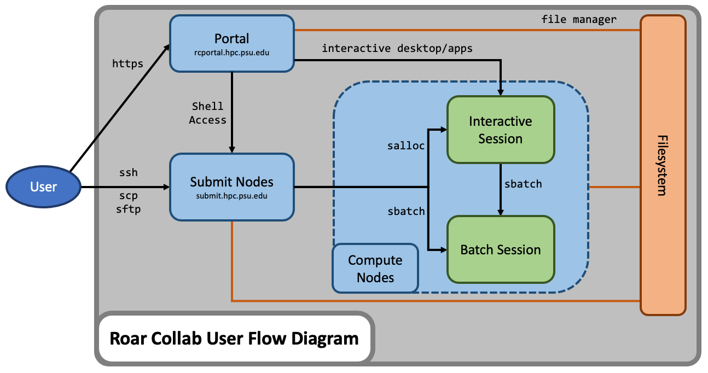

Overview
About ICDS
The Institute for Computational and Data Sciences (ICDS) is one of seven interdisciplinary research institutes within Penn State's Office of the Senior Vice President for Research. The mission of ICDS is to build capacity to solve problems of scientific and societal importance through cyber-enabled research. ICDS enables and supports the diverse computational and data science research taking place throughout Penn State. Users come from all corners of the university and conduct interdisciplinary research using the high-performance computing (HPC) systems delivered and supported by ICDS.
High-Performance Computing Overview
High-performance computing (HPC) is the use of powerful computing systems that are capable of performing complex tasks and solving large-scale computational problems at significantly higher speeds and with greater efficiency than conventional computing systems. These tasks often involve processing and analyzing massive datasets, conducting simulations, modeling complex phenomena, and executing advanced algorithms. The increase in computational performance is a result of the aggregation of computing resources and utilizing those resources in concert to perform the computational process. HPC systems consist of many compute nodes that communicate over fast interconnections. Each node contains many high-speed processors and its own memory. Typically, the nodes also are connected to a shared filesystem. The seamless integration of the compute, storage, and networking components at a large scale is the fundamental essence of HPC. HPC plays a critical role in pushing the boundaries of academic research and enabling breakthroughs in science, engineering, and technology across diverse fields of study.
Roar Collab User Flow Diagram

Roar Collab System Specs
Roar Collab (RC) is the flagship computing cluster for Penn State researchers. Designed with collaboration in mind, the RC environment allows for more frequent software updates and hardware upgrades to keep pace with researchers’ changing needs. RC utilizes the Red Hat Enterprise Linux (RHEL) 8 operating system to provide users with access to compute resources, file storage, and software. RC is a heterogeneous computing cluster comprised of different types of compute nodes, each of which can be categorized as a Basic, Standard, High-Memory, GPU, or Interactive node.
| Node Type (Designation) |
Core/Memory Configurations |
Description |
|---|---|---|
| Basic ( bc) |
24 cores, 126 GB 64 cores, 255 GB |
Connected via Ethernet Configured to offer about 4 GB of memory per core Best used for single-node tasks |
| Standard ( sc) |
24 cores, 258 GB 48 cores, 380 GB 48 cores, 512 GB |
Connected both via Infiniband and Ethernet Infiniband connections provide higher bandwidth inter-node communication Configured to offer about 10 GB of memory per core Good for single-node tasks and also multi-node tasks |
| High-Memory ( hc) |
48 cores, 1 TB 56 cores, 1 TB |
Connected via Ethernet Configured to offer about 25 GB of memory per core Best for memory-intensive tasks |
| GPU ( gc) |
28 cores, 256 GB 28 cores, 512 GB 48 cores, 380 GB |
Feature GPUs that can be accessed either individually or collectively Both A100 and P100 GPUs are available |
| Interactive ( ic) |
36 cores, 500 GB | Feature GPUs that are specifically configured for GPU-accelerated graphics Best for running graphical software that requires GPU-accelerated graphics |
Slurm's sinfo Command
RC is a heterogeneous computing cluster. To see the different node configurations on RC, use the following command:
sinfo --Format=features:40,nodelist:20,cpus:10,memory:10
This sinfo command displays not only the core and memory configuration of the
nodes, but it also indicates the processor generation associated with each
node. Furthermore, while connected to a specific node, the lscpu command
provides more detailed information on the specific processor type available on
the node. For nodes with GPU(s), the nvidia-smi command displays more
detailed information on the GPU(s) available on that node.
Slurm's sinfo
documentation page provides a detailed description of the function and options
of the sinfo command.
Best Practices
Roar Collab is shared by many users, and a user's operating behavior can inadvertantly impact system functionality for other users. All users must follow a set of best practices which entail limiting activities that may impact the system for other users. Exercise good citizenship to ensure that your activity does not adversely impact the system and the RC research community.
Do Not Run Jobs on the Submit Nodes
RC has a few login nodes that are shared among all users. Dozens, and sometimes hundreds, of users may be logged on at any one time accessing the file systems. Think of the submit nodes as a prep area, where users may edit and manage files, perform file management, initiate file transfers, submit new jobs, and track existing batch jobs. The submit nodes provide an interface to the system and to the computational resources.
The compute nodes are where intensive computations may be performed and where research software may be utilized. All batch jobs and executables, as well as development and debugging sessions, must be run on the compute nodes. To access compute nodes on RC, either submit a batch job or request an interactive session. The Submitting Jobs section of the RC User Guide provides further details on requesting computational resources.
A single user running computationally expensive or disk intensive tasks on a submit node negatively impacts performance for other users. Additionally, since the submit nodes are not configured for intensive computations, the computational performance of such processes is poor. Habitually running jobs on the submit nodes can potentially lead to account suspension.
Do Not Use Scratch as a Primary Storage Location
Scratch serves as a temporary repository for compute output and is explicitly designed for short-term usage. Unlike other storage locations, scratch is not backed up. Files are subject to automatic removal if they are not accessed within a timeframe of 30 days. The Handling Data section of the RC User Guide provides further details on storage options.
Make an Effort to Minimize Resource Requests
The amount of time jobs are queued grows as the amount of requested resources increases. To minimize the amount of time a job is queued, minimize the amount of resources requested. It is best to run small test cases to verify that the computational workflow runs successfully before scaling up the process to a large dataset. The Submitting Jobs section of the RC User Guide provides further details on requesting computational resources.
Remain Cognizant of Storage Quotas
All available storage locations on RC have associated quotas. If the usage of a storage location approaches these quotas, software may not functional nominally and produce cryptic error messages. The Handling Data section of the RC User Guide provides further details on checking storage usage relative to the quotas.
Policies
The policies regarding the use of RC can be found on the ICDS Policies page.